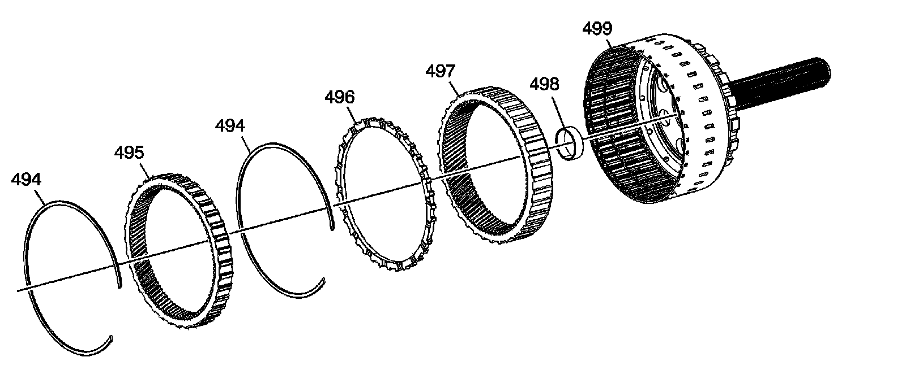

Output Shaft Assembly
Disassembled Views (6L80)
Output Shaft Assembly:

494 - Output Carrier Internal Gear Retaining Ring
495 - Output Carrier Internal Front Gear
496 - Output Carrier Internal Gear Spacer
497 - Output Carrier Internal Rear Gear
498 - Output Carrier Bushing
499 - Output Shaft Assembly - Model Dependent